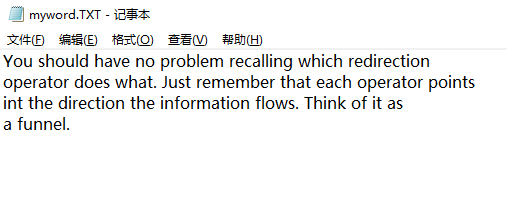

今天复习C语言。发现一个刚开始看比较难懂的地方，后面实操了一下，把相关内容记录下来。
下面直接给出程序，作用是从键盘读取字符然后显示在屏幕上，直到遇到文件结尾EOF。
/* echo_eof.c -- 重复输入，直到文件的结尾 */ |
默认情况下，使用标准I/O包的C程序将标准输入作为其输入源，例如键盘。
然而，我们可以指示程序到其他地方寻求输入。例如告诉程序从文件而不是键盘寻求其输入。
Unix、Linux和当前的DOS版本可以让我们重定向输入和输出。输入重定向使程序能够使用文件代替键盘作为输入，输出重定向则使程序能够使用文件代替屏幕作为输出。
输入重定向
编辑new.txt文件输入任意内容如下。

编译echo_eof.c程序后，得到exe文件，使用cmd输入命令。
echo_eof.exe < new.txt
可以看到new.txt的内容被打印到控制台上。
解释：<是重定向运算符。该运算符把new.txt文件与stdin流关联起来，将该文件的内容引导至echo_efo程序。echo_eof程序本身并不知道输入是来自文件而不是来自键盘。该程序所知道的一切就是向它传送了一个字节流，所以它将这些字符读出并一次打印一个字符，直到遇到文件结尾。
输出重定向
使用cmd输入命令。
echo_eof.exe > mywords.txt
然后在控制台上键入一段内容。这时发现在exe文件的相同目录下，新增了mywords.txt文件。

解释：>是另一个重定向运算符。该运算符会导致建立一个名为mywords的新文件，然后将echo_eof的输出重定向到该文件。该重定向将stdout从显式设备重定向到mywords文件。如果已经具有一个名为mywords的文件，则通常会删除该文件然后用新的文件代替之。
组合重定向
现在假设希望制作文件mywords的一个副本，并将其命名为savewords。只需输入下列命令。
echo_eof < mywords > savewords
下面的命令同样可以实现，因为重定向运算符的顺序无关紧要。
echo_eof > savewords < mywords
补充
- 重定向运算符将一个可执行程序与一个数据文件连接起来。该运算符不能用于一个数据文件与另一个数据文件的连接，也不能用于一个程序与另一个程序的连接。
- 使用这些运算符时，输入不能来自一个以上的文件，输出也不能定向至一个以上的文件。
- 除了偶尔在使用到一些对Unix shell、Linux shell或DOS具有特殊意义的字符时，名字和操作符之间的空格并不是必须的。例如，可以使用echo_eof<words。